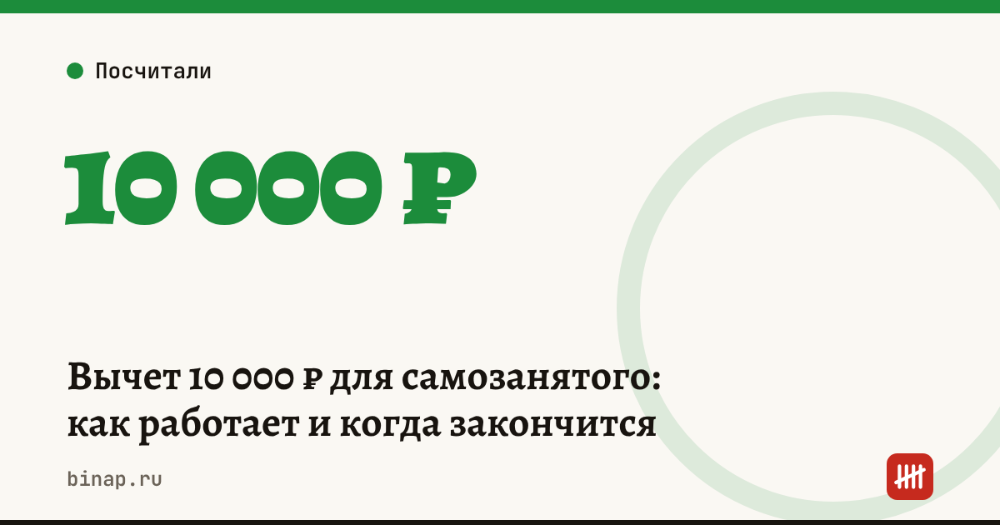

Вычет 10 000 ₽ для самозанятого: как работает и когда закончится

У каждого самозанятого есть налоговый вычет 10 000 ₽. Он работает автоматически: пока вычет не израсходован, ставка налога ниже — 3% вместо 4% с доходов от физлиц и 4% вместо 6% с доходов от компаний и ИП. Разница между полной и сниженной ставкой списывается из вычета. Когда 10 000 ₽ закончатся, налог считается по полной ставке.
Коротко
- Вычет — 10 000 ₽, его даёт закон о налоге на профессиональный доход (ст. 12 закона № 422-ФЗ).
- С доходов от физлиц ставка снижается с 4% до 3%, с доходов от компаний и ИП — с 6% до 4%.
- Подавать заявление не нужно: налоговая учитывает вычет сама при расчёте налога.
- Вычета хватит примерно на 1 000 000 ₽ доходов от физлиц или 500 000 ₽ доходов от компаний.
- Остаток вычета виден в приложении «Мой налог».
Сроки, изменения и разборы для ИП и самозанятых — каждое утро в Telegram и MAX. Подпишитесь, чтобы не пропустить.
Как работает
| Клиент | Полная ставка | Ставка с вычетом | Сколько списывается из вычета |
|---|---|---|---|
| Физлицо | 4% | 3% | 1% от дохода |
| Компания или ИП | 6% | 4% | 2% от дохода |
На какой доход хватит вычета
Доход от физлиц, на который хватит вычета = 10 000 ÷ 1% = 1 000 000 ₽.
Доход от компаний и ИП = 10 000 ÷ 2% = 500 000 ₽.
Пример (расчёт редакции). Мастер получает 80 000 ₽ в месяц от физлиц.
| Период | Налог в месяц | Списано из вычета за месяц |
|---|---|---|
| Пока вычет есть | 80 000 × 3% = 2 400 ₽ | 800 ₽ |
| Когда вычет закончился | 80 000 × 4% = 3 200 ₽ | — |
Вычета хватит на 10 000 ÷ 800 = 12,5 месяца. Потом налог вырастет на 800 ₽ в месяц — заложите это в цену заранее.
Если доходы смешанные, вычет расходуется быстрее: каждые 100 000 ₽ от компаний съедают 2 000 ₽ вычета.
Что сделать
- Откройте «Мой налог» и посмотрите остаток вычета.
- Посчитайте по формуле, на сколько месяцев его хватит при вашем доходе.
- Заложите в цену будущий рост налога на 1–2 процентных пункта.
- Если доход приближается к 2,4 млн ₽ в год, заранее сравните самозанятость с ИП: самозанятый или патент.
Как стать самозанятым и что проверить до регистрации — пошагово. Как налоговая проверяет аннулированные чеки — скоринг ФНС.
Частые вопросы
Нужно ли подавать заявление на вычет? Нет, налоговая применяет его автоматически при расчёте налога за месяц.
Можно ли получить вычет второй раз? Вычет 10 000 ₽ — разовый. Как он учитывается при повторной регистрации, уточните в «Мой налог» или в инспекции.
Влияет ли вычет на лимит 2,4 млн ₽? Нет. Лимит считается по доходам, а вычет уменьшает только налог.